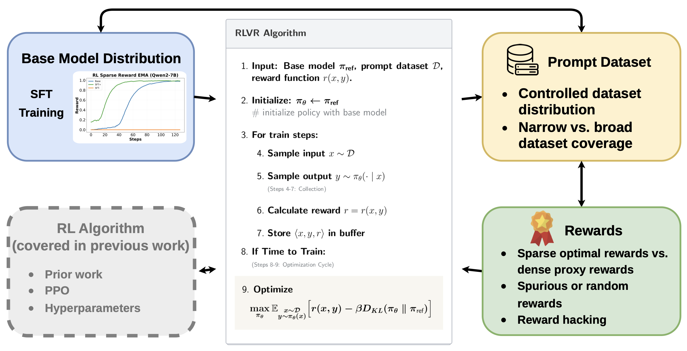
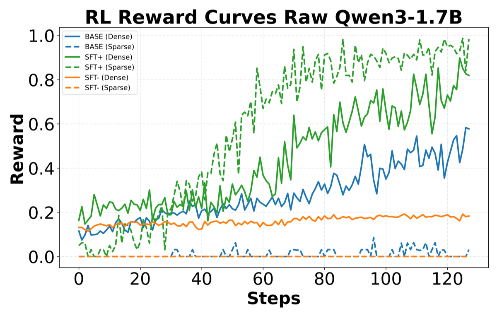
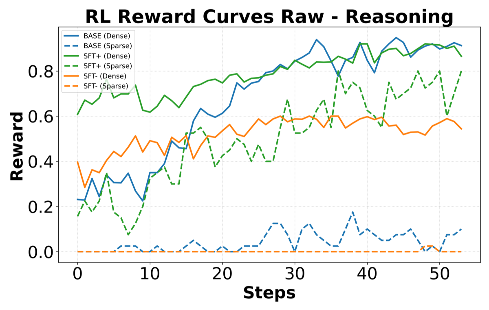
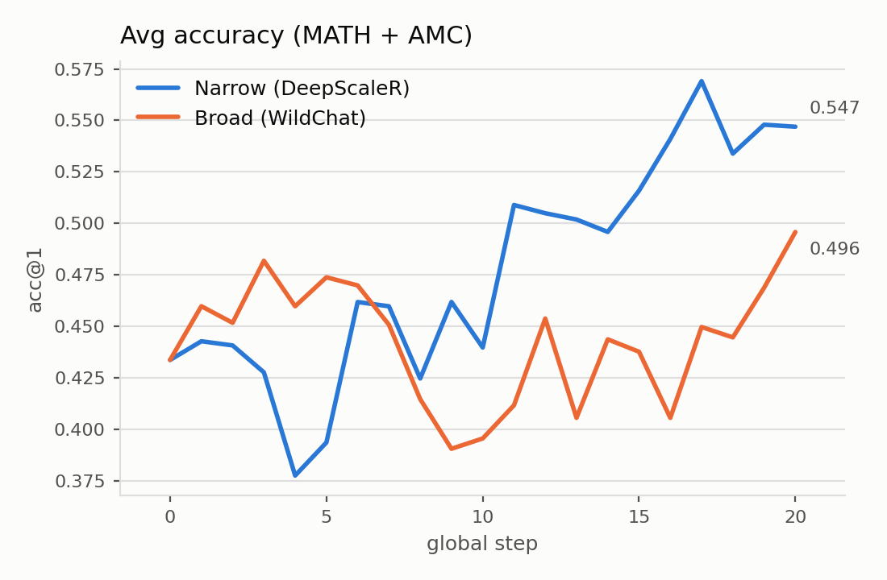
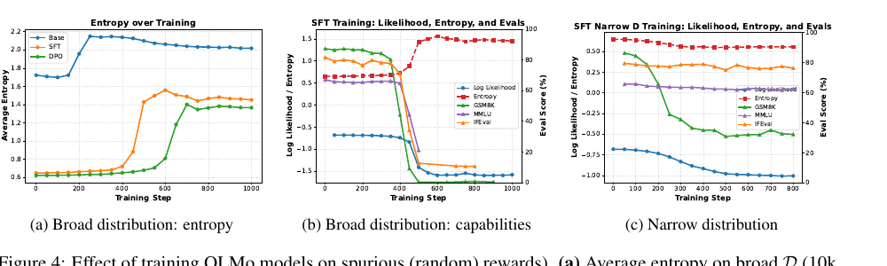

RL post-training is usually explained by its algorithm. We take the algorithm off the table and vary the other three inputs — the base model, the reward, and the prompt distribution — to show which one actually decides the outcome.
1University of Washington 2Allen Institute for AI ∗Equal contribution
Reinforcement learning (RL) post-training has emerged as a powerful framework for enhancing the capabilities of large language models (LLMs), enabling impressive reasoning, math, and coding capabilities. Yet for many researchers and practitioners, the principles behind classical RL remain a "black box". In this work, we deconstruct the RL post-training algorithm, investigating each step to clarify what is actually happening beneath the surface. By isolating the mechanics of RL with Verifiable Rewards in a controlled and simplified environment, we examine how RL outcomes are shaped by the base model’s prior distribution, the granularity of the reward signal, the diversity of the prompt distribution, and model scale. We use the entropy of the policy's output distribution as a lens to compare the distributions learned through pretraining, SFT, and RL post-training, revealing how each stage shapes model certainty. Our investigation sheds light on how these choices interact to affect post-training success. For example, we show that the effect of so-called "spurious rewards" depends on the prompt distribution used for post-training. We also provide insight into why the success of RL post-training depends on whether the base model already places sufficient probability mass on the desired behavior, linking it to the classical concept of exploration in RL. Ultimately, we provide this primer as a resource to those in the NLP community wishing to incorporate RL as a tool in their toolbox.

Due to the large success of RL in LLM post-training, RL has emerged as a powerful technique for enhancing LLM capabilities, used widely across industry and academia. However, recent works in the literature may contribute to misconceptions of how the mechanics of RL post-training actually function.
For example, Shao et al. showed that using random rewards still shows performance gains on Qwen models. We show that this is an isolated phenomenon that is not only restricted to certain models, but to using certain narrow prompt datasets for post-training. When using a broad prompt, training on random rewards makes any answer equally valid, increasing policy entropy and destroying capabilities.
Additionally, Yue et al. argued that post-training merely increases the likelihood of sampling correct responses that were already within the base model's pass@k distribution, for sufficiently large k. In other words, the base model already had the capabilities; RLVR isn't learning new skills, but rather reweighting good responses from the pre-training distribution. Classic RL practitioners will recognize this as the problem of exploring effectively. Because RLVR typically uses sparse rewards, in order for the model to receive a reward signal, the capability being trained must have some probability of being sampled by the base model's distribution. However, this is only due to the sparseness of the rewards! We show that using dense rewards can overcome this phenomenon, and that RL can train the model to exhibit new capabilities that had negligible probability in the base model's pass@k.
Strip away the engineering and RL with verifiable rewards (RLVR) is a short loop: sample a prompt, sample a response from the model, score the response with a verifier, nudge the weights toward higher-scoring responses, repeat. A KL penalty keeps the policy near the base model you started from.
Three things go into that loop: a base model, a reward function, and a prompt dataset. Almost all the published work varies a fourth — the algorithm (PPO, GRPO, hyperparameters). In this work, we studied post-training behavior when varying the first three.
Post-training is best understood as redistributing probability mass inside the pretrained distribution. That framing suggests the measurement: track the probability the model assigns to the behavior you want, and track the entropy of its output distribution, throughout training.
Benchmarks are noisy and it is hard to say what a model "knew" beforehand. So we used two tasks where the target behavior is a single, exactly checkable string.
Movie quote. Get the model to produce "life is like a box of chocolates you never know what youre gonna get". Trivial to verify, and we can estimate its prior probability by sampling.
AIME 2025 Problem 4. Count the ordered integer pairs (x, y) in [−100, 100] with 12x² − xy − 6y² = 0. The answer is 117. Same idea, but the behavior is a multi-step reasoning chain rather than a memorized string.
The useful trick is that we can move the prior. SFT+ fine-tunes the base model to produce the target 20% of the time (with other quotes mixed in to avoid catastrophic forgetting), inflating its probability. SFT− does the opposite: it maximizes cross-entropy on the target, crushing its probability to roughly zero. Base, SFT+, and SFT− give us three models that differ mainly in how much mass they place on the thing we are about to reward.
Train all three variants with a standard binary reward and the pattern is stark.
| Model | SFT+ | Base | SFT− |
|---|---|---|---|
| Qwen3-8B | 43.12% → 100% | 0.00% → 0.00% | 0.00% → 0.00% |
| Qwen2-7B | 28.75% → 99.6% | 3.52% → 99.99% | 0.00% → 0.00% |
| Qwen3-1.7B | 14.04% → 98.7% | 0.48% → 10.0% | 0.00% → 0.00% |
| Qwen2-1.5B | 7.96% → 92.5% | 0.31% → 0.71% | 0.00% → 0.00% |
Probability of producing the target quote, before → after sparse-reward RL (10,000 samples).
Models that already had the behavior converge quickly. Models that did not never get a single positive reward, so there is no gradient and nothing happens. Qwen2-7B, sitting at 3.5%, took a 40-step plateau before it took off; Qwen3-1.7B at 0.5% never did. There is a threshold, and it is a threshold on coverage — on whether the target has enough initial mass to ever be sampled.
The same thing shows up on the AIME problem. The base Qwen2.5-7B-Instruct stalls near 10% under sparse rewards while the SFT+ version reaches ~86%. This is the "coverage principle" from the theory literature, showing up cleanly in practice: with sparse rewards, RL selects among behaviors the base model already has.
A popular reading of the above is that RL can never teach anything new — that it only sharpens pass@k. We think that conclusion is about the reward, not about RL.
So we replaced the binary reward with a dense one. For the quote task, negative Levenshtein distance to the target. For the math problem, a process reward model that gives partial credit for reaching any of five valid sub-steps of the solution.


Qwen3-1.7B — the model with a 0.5% prior that failed completely under sparse rewards — climbs to nearly 50% exact match with the dense signal. On AIME, the base model goes from flat-lining around 10% to over 90%, slightly beating the SFT+ model that was handed the ground-truth derivation.
| Configuration | SFT+ | Base | SFT− |
|---|---|---|---|
| No reward | 26.6% | 3.92% | 0.00% |
| Sparse reward | 85.9% | 10.2% | 0.00% |
| Dense reward | 86.7% | 92.2% | 0.00% |
AIME Problem 4 accuracy before and after RL, Qwen2.5-7B-Instruct (128 samples).
Reading the trajectories, the base model under dense reward stitches together partial reasoning steps into valid solution paths that differ from the SFT+ ground truth. That is not selection among existing behaviors. It is worth saying that reward shaping still has the classical failure mode: on the quote task the dense-trained SFT+ model ends up worse at exact matching than the sparse one, because Levenshtein distance rewards being close rather than being right.
An odd result has been floating around: training with random rewards improves math benchmarks, at least for Qwen models. It has been read as evidence that post-training gains are somewhat illusory. We think the missing variable is the prompt distribution.
Reward the model at random and you reward whatever it samples most often. On a narrow prompt set where the base model is already good, that means reinforcing its own correct answers — entropy falls, the distribution sharpens, and benchmarks can go up. On a broad prompt set, random rewards reinforce everything equally, entropy rises, and the model drifts toward uniform.

OLMo 3, which has no strong math prior and does not show the spurious-rewards effect, makes the mechanism visible. Under a broad prompt set, entropy spikes around step 400 and GSM8K, MMLU, and IFEval all collapse together — global unlearning, with no domain spared. Under a narrow set of 100 math prompts, entropy decreases, MMLU and IFEval hold steady, and only GSM8K falls (86% to ~32%). The damage is targeted at the domain being trained on.

Neither setting creates a new capability. Narrow prompts sharpen the prior, which helps if the prior was good and hurts if it was not. Qwen's gains fit that explanation exactly. The conditions under which spurious rewards look beneficial — narrow prompts, base model already strong in the target domain — describe a fairly small corner of what people actually do in post-training.
The paper has the full experimental detail, a literature review in Appendix B, and the PRM setup in Appendix D.
@misc{clay2026demystifyingreinforcementlearningposttraining,
title={Demystifying Reinforcement Learning Post-Training of Language Models},
author={Donovan Clay and Saket Gollapudi and Sankar Harilal and Min Jang and Jacob Morrison and Sewoong Oh and Natasha Jaques},
year={2026},
eprint={2608.24949},
archivePrefix={arXiv},
primaryClass={cs.LG},
url={https://arxiv.org/abs/2608.24949},
}